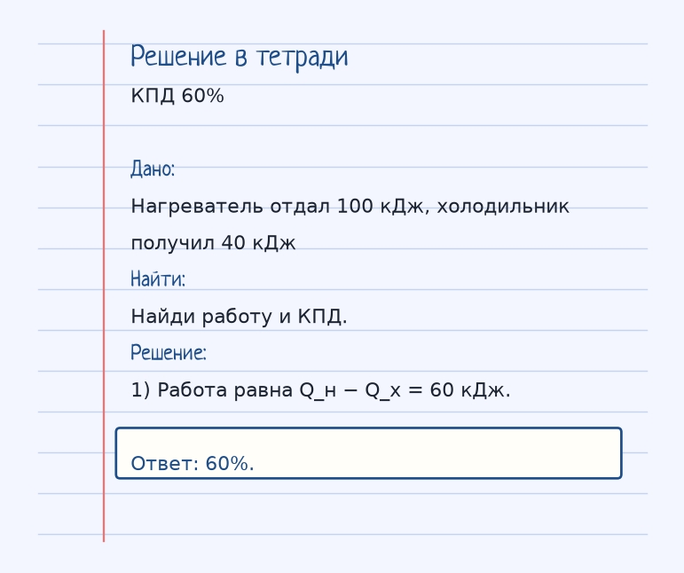
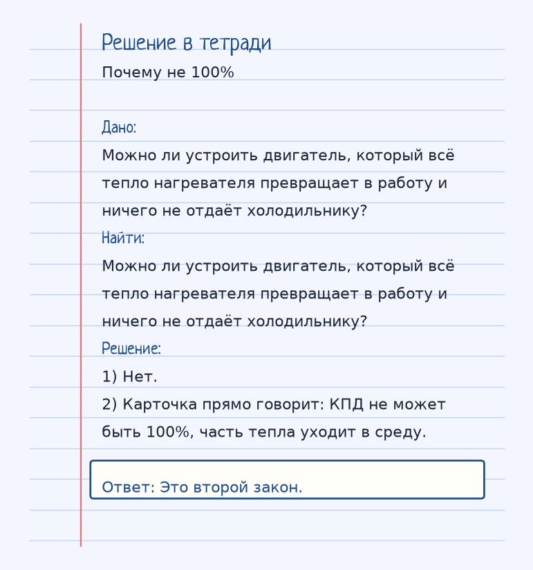

Тема «КПД теплового двигателя»: физический смысл, единицы величин, типичные ошибки и два разобранных примера.
Схема к условию.
Физический смысл
Тепловой двигатель берет тепло от нагревателя, часть превращает в работу, а остальное отдает холодильнику. КПД показывает, какая доля тепла пошла на работу.
Тепловой двигатель забирает тепло Q_н у нагревателя, часть превращает в работу, остаток Q_х отдаёт холодильнику. КПД — доля, которая стала работой: η = (Q_н − Q_х)/Q_н, часто в процентах.
В аналогии зарплата 100 тысяч, налоги 40, на руках 60: η = 60%. Налоги здесь не «потерянные зря молекулы», а обязательная отдача холодильнику. Без неё цикл не замкнуть.
Даже идеальный цикл Карно не даёт 100%, если температуры нагревателя и холодильника конечны: η = (T_н − T_х)/T_н. Сто процентов потребовали бы T_х = 0 К, чего у реального холодильника нет. Второй закон как раз про это: часть тепла уходит в окружающую среду.
Формула и единицы
η = ((Q_н − Q_х) / Q_н) · 100%
η = ((T_н − T_х) / T_н) · 100%
Q_н — тепло от нагревателя, Q_х — тепло, отданное холодильнику. Вторая формула — максимальный КПД (цикл Карно).
Q_н — тепло от нагревателя, Q_х — тепло холодильнику. Вторая формула — КПД цикла Карно, температуры абсолютные.
Пояснение
Ты получаешь зарплату 100 тыс. (нагреватель), отдаешь налоги 40 тыс. (холодильник), у тебя остается 60 тыс. (работа). КПД = 60%.
Зарплата 100 тысяч — нагреватель, налоги 40 — холодильник, 60 остаётся на работу. КПД 60%.
Типичные ошибки
КПД не может быть 100%. В природе всегда часть тепла уходит в окружающую среду (второй закон термодинамики).
КПД не бывает 100%. Даже формула Карно меньше единицы, пока у холодильника ненулевая абсолютная температура.
Разобранные примеры. Решение каждого открывается отдельно.
Разбор 1
КПД 60%
Нагреватель отдал 100 кДж, холодильник получил 40 кДж. Найди работу и КПД.
На схеме только условие.
Порядок записи: данные, единицы СИ, искомая величина, ход решения, ответ.
Дано. Нагреватель отдал 100 кДж, холодильник получил 40 кДж
В СИ.
Найти. Найди работу и КПД.
Решение.
Работа равна Q_н − Q_х = 60 кДж.
60%.

Разбор 2
Почему не 100%
Можно ли устроить двигатель, который всё тепло нагревателя превращает в работу и ничего не отдаёт холодильнику?
На схеме только условие.
Порядок записи: данные, единицы СИ, искомая величина, ход решения, ответ.
Дано. Можно ли устроить двигатель, который всё тепло нагревателя превращает в работу и ничего не отдаёт холодильнику?
В СИ.
Найти. Можно ли устроить двигатель, который всё тепло нагревателя превращает в работу и ничего не отдаёт холодильнику?
Решение.
Нет.
Карточка прямо говорит: КПД не может быть 100%, часть тепла уходит в среду.
Это второй закон.

Разбор 3
200 и 50
Нагреватель отдал 200 кДж, холодильник получил 50 кДж. Найдите работу и КПД.
На схеме только условие.
Порядок записи: данные, единицы СИ, искомая величина, ход решения, ответ.
Дано. Qн = 200 кДж, Qх = 50 кДж
В СИ.
A = Qн − Qх.
Найти. A и η
Решение.
A = 150 кДж.
η = 150/200 = 0,75 = 75%.
150 кДж; 75%.
Разбор 4
Не 100%
Можно ли построить тепловой двигатель с КПД 100%?
На схеме только условие.
Порядок записи: данные, единицы СИ, искомая величина, ход решения, ответ.
Дано. Цикл с нагревателем и холодильником
В СИ.
Второй закон термодинамики.
Найти. Ответ
Решение.
Часть теплоты передаётся холодильнику.
КПД 100% для такого цикла недостижим.
Нет.
Разбор 5
Карно
В формуле КПД цикла Карно какие температуры используют?
На схеме только условие.
Порядок записи: данные, единицы СИ, искомая величина, ход решения, ответ.
Дано. η = (Tн − Tх)/Tн
В СИ.
Абсолютная шкала.
Найти. Шкала
Решение.
Tн и Tх берут в кельвинах.
Кельвины.
Разбор 6
Нулевая работа
Qх = Qн. Чему равен КПД?
На схеме только условие.
Порядок записи: данные, единицы СИ, искомая величина, ход решения, ответ.